### Stable Contracts "All services, without exception, must be designed from the ground up to be externalizable. That is to say, the team must plan and design to be able to expose the interface to developers in the outside world. No exceptions. Anyone who doesn’t do this will be fired." - [Jeff Bezos, Api mandate, 2002](https://nordicapis.com/the-bezos-api-mandate-amazons-manifesto-for-externalization/) // Name: Jukka Nikki, Identity: Programmer, Since: 6502 // TODO: Codeneering - reaching higher level of abstraction
## Theory & terminology
#### [Design by contract (DbC), 1986, Bertram Meyer](https://en.wikipedia.org/wiki/Design_by_contract) 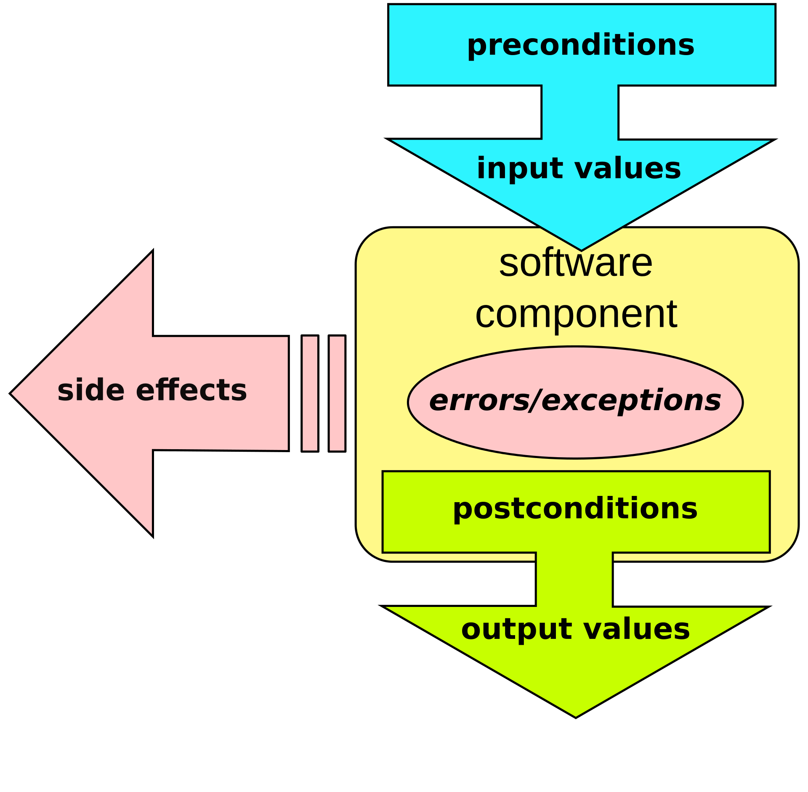 "formal, precise and verifiable interface specifications for software components, which extend the ordinary definition of abstract data types with preconditions, postconditions and invariants."
#### [The OpenAPI Initiative (OAI)](https://www.openapis.org/) "As an open governance structure under the [Linux Foundation](https://www.linuxfoundation.org/), the OAI is focused on creating, evolving and promoting a vendor neutral description format. The OpenAPI Specification was originally based on the [Swagger](https://swagger.io/) Specification, donated by [SmartBear Software](https://smartbear.com/)." - OAI website
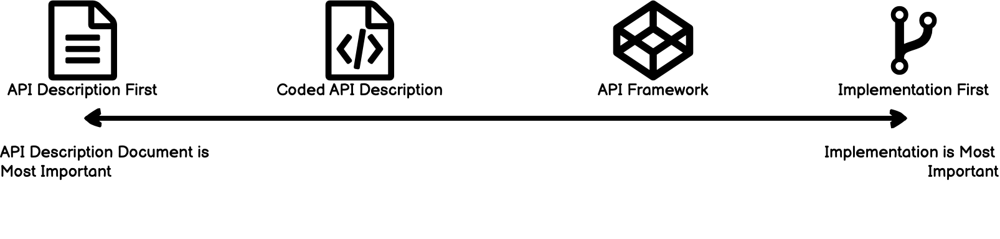 "An application programming interface (API) is a connection between computers or between computer programs. (..) A document or standard that describes how to build or use such a connection or interface is called an API specification." - [Wikipedia](https://en.wikipedia.org/wiki/API)
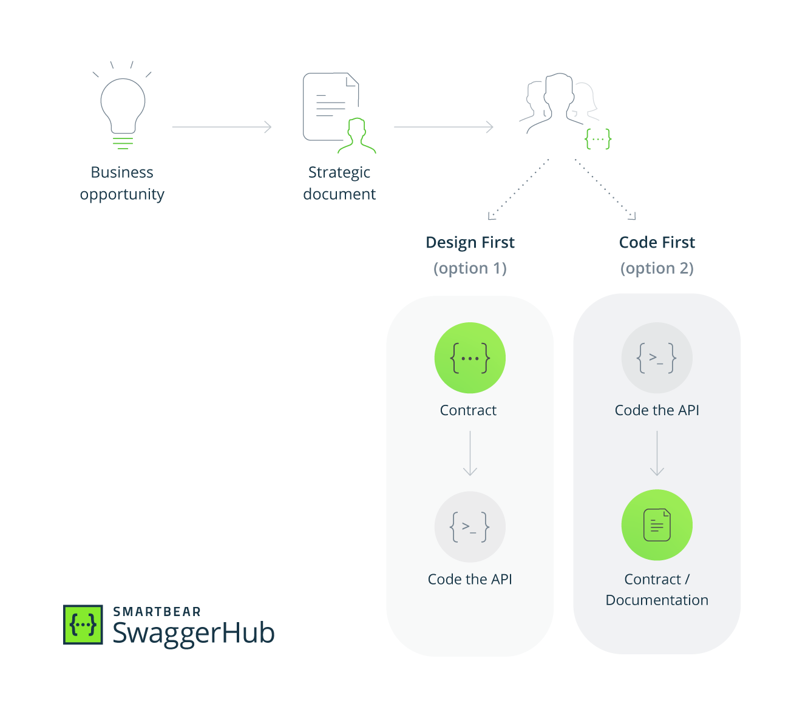 "Programmers know the benefits of everything and the tradeoffs of nothing" - Rich Hickey Is this question of Speed vs. Quality?
#### [Is High Quality Software Worth the Cost?](https://martinfowler.com/articles/is-quality-worth-cost.html) 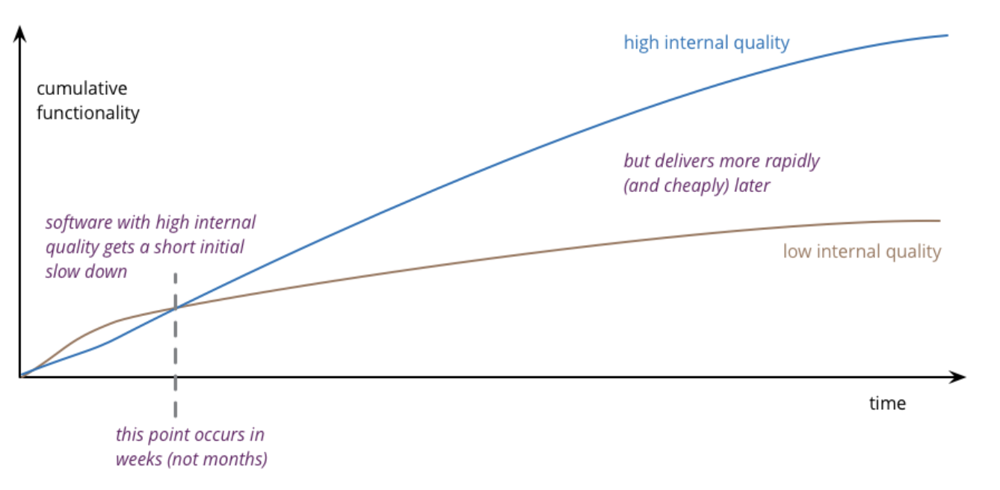 "(..) there is a period where the low internal quality is more productive than the high track. During this time there is some kind of trade-off between quality and cost. The question, of course, is: how long is that period before the lines cross?" - Martin fowler
## Options Code? .. Spec?
#### "Code" or implementation first 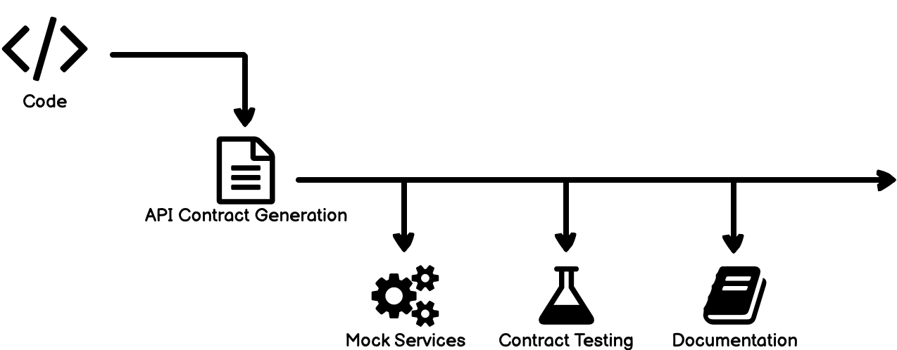 "Proponents of this process believe that writing and maintaining an API description document is difficult and error prone, and that it slows down the development process" - [Kevin Sookocheff](https://sookocheff.com/post/api/the-false-dichotomoy-of-design-first-and-code-first-api-development/)
#### Variant: Api Framework "API Framework method mixes the API implementation with its description Example: [HAL](https://stateless.group/hal_specification.html)+JSON makes [Spring HATEOAS](https://spring.io/projects/spring-hateoas) more closely align to an API description document. (..) generate an API description that conforms to OpenAPI using the [Springdoc](https://springdoc.org/) project." - [Kevin Sookocheff](https://sookocheff.com/post/api/the-false-dichotomoy-of-design-first-and-code-first-api-development/)
#### "Design" or Api Description first 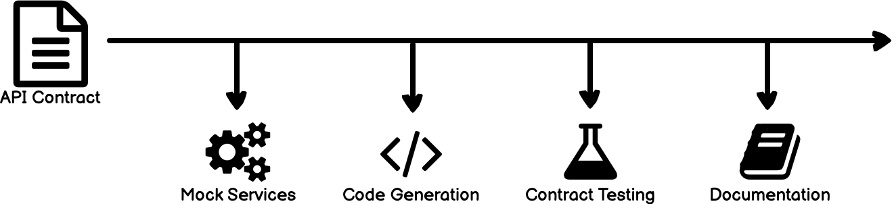 "In theory, a design-first process can help catch potential problems with the API early and avoids wasting time and money writing code which is not going to solve a problem." - [Kevin Sookocheff](https://sookocheff.com/post/api/the-false-dichotomoy-of-design-first-and-code-first-api-development/)
#### Variant: Coded API Description (DSL) "Coded API Description involves leveraging a programming language to create your API description. Example: With [Spot](https://github.com/airtasker/spot) TypeScript classes define the API and interfaces are used to represent the request and response bodies. Annotations specific to [Spot](https://github.com/airtasker/spot) are used to fill out the rest of the API description. (..) you can use [Spot](https://github.com/airtasker/spot) to generate your OpenAPI description document" - [Kevin Sookocheff](https://sookocheff.com/post/api/the-false-dichotomoy-of-design-first-and-code-first-api-development/)
## Case study Sping Boot + Spring Hateoas + springdoc
#### Reverse engineering / Documenting 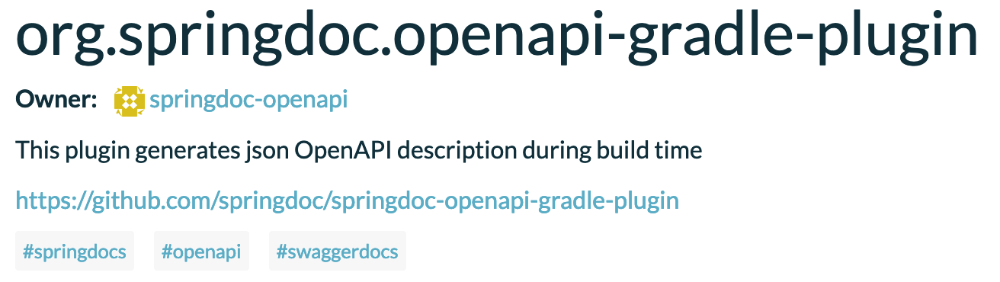 implementation("org.springdoc:springdoc-openapi-ui:1.5.12") implementation("org.springdoc:springdoc-openapi-webmvc-core:1.5.12") implementation("org.springdoc:springdoc-openapi-kotlin:1.5.12") implementation("org.springdoc:springdoc-openapi-javadoc:1.5.12") openApi { outputDir.set(file("$buildDir/docs")) outputFileName.set("api.json") } Use [Gradle plugin](https://github.com/springdoc/springdoc-openapi-gradle-plugin) with [Springdoc](https://springdoc.org/) dependencies
#### Live documentation 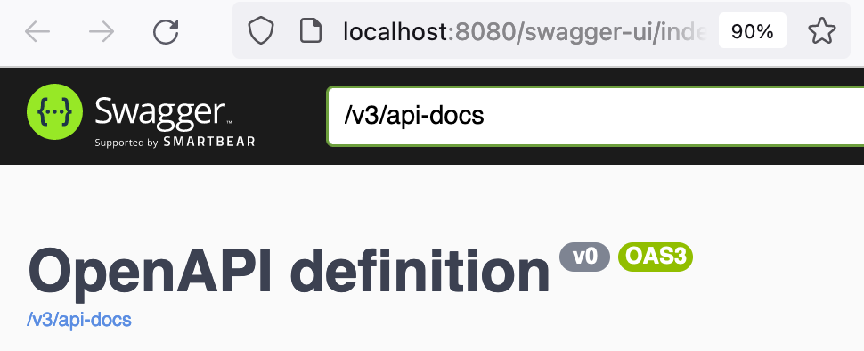 Inspect with [Swagger ui](https://swagger.io/tools/swagger-ui/) or as raw data. - /swagger-ui.html - /v3/api-docs (json) - /v3/api-docs.yaml (yaml download)
#### Forward engineering / Generation 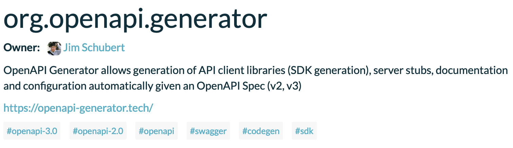 openApiGenerate { generatorName.set("kotlin-spring") inputSpec.set("$rootDir/api.yaml") outputDir.set("$buildDir/generated") modelPackage.set("com.test.model") apiPackage.set("com.test.api") configOptions.set(.. Use [Gradle plugin](https://plugins.gradle.org/plugin/org.openapi.generator) with ["kotlin-spring"](https://openapi-generator.tech/docs/generators/kotlin-spring/) generator
#### [Generation Gap Pattern](https://en.wikipedia.org/wiki/Generation_gap_(pattern)) "Modifications should not be made to generated code, as they would be overwritten if the code generation process was ever re-run" - John Vlissides With open api - Encapsulate generated code within web adapter - Generate data structures, request and response objects, and interfaces for controllers - Make sure generated code matches with your other code (datatypes, naming, ..) - Define clear boundaries - Don't generate too much!
#### Mock before you Rock 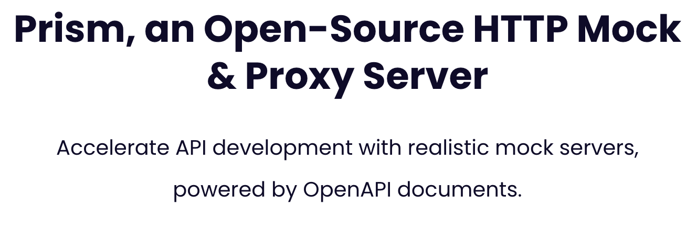 Use [Stoplights](https://stoplight.io/) [Prism](https://stoplight.io/open-source/prism/) to mimic your API’s behavior as if you already built it.
#### Collaborate, share, enforce rules 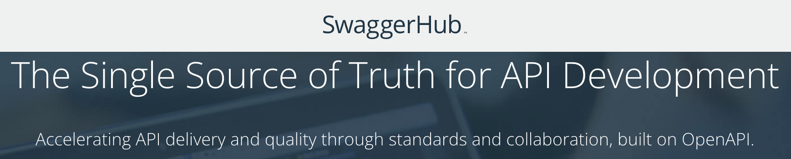 Use [SwaggerHub](https://swagger.io/tools/swaggerhub/) as your single source of truth for API definitions
#### Testing 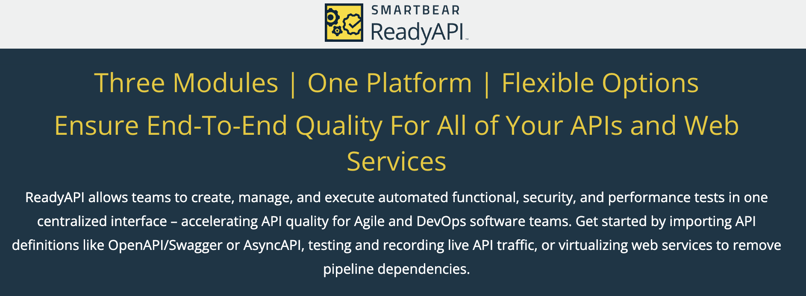 Use [readyApi](https://smartbear.com/product/ready-api/) to accelerate functional, security, and load testing of RESTful, SOAP, GraphQL and other web services right inside your CI/CD pipeline
#### Events and asynchronous messaging 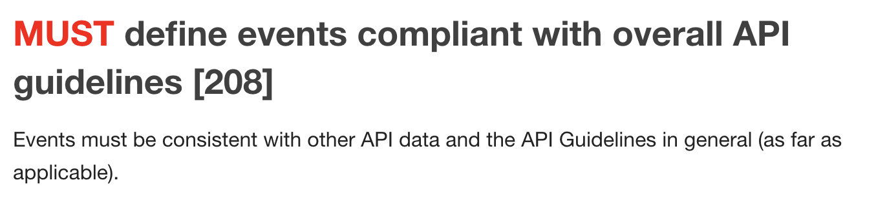 Define [Events](https://opensource.zalando.com/restful-api-guidelines/#events) using clear conventions. "What distinguishes events from other kinds of data is the delivery style used, asynchronous publish-subscribe messaging. But there is no reason why they could not be made available using a REST API" - [Zalando](https://opensource.zalando.com/restful-api-guidelines/#events)